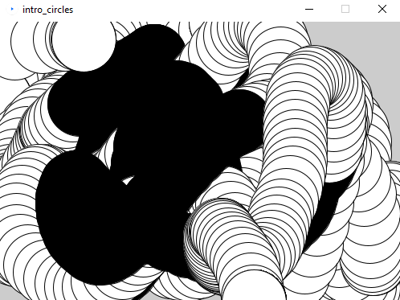
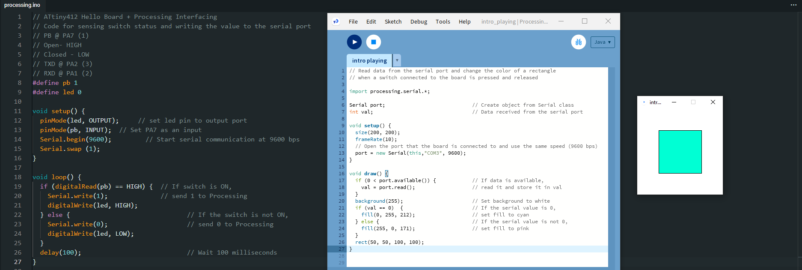

Processing
We will be integrating Processing and Arduino in our programming. Following tutorials from Processing.
Using the Getting Started tutorial by Casey Reas and Ben Fry. I managed to code the following in Processing.
By running this code, I was able to use my mouse buttons as input. The following is the outcome.
Next, I programmed my Hello Board such that I could produce an input with my push button which then sends a serial signal to Processing. This output allowed me to change the colour of the square in the pop-up window.
